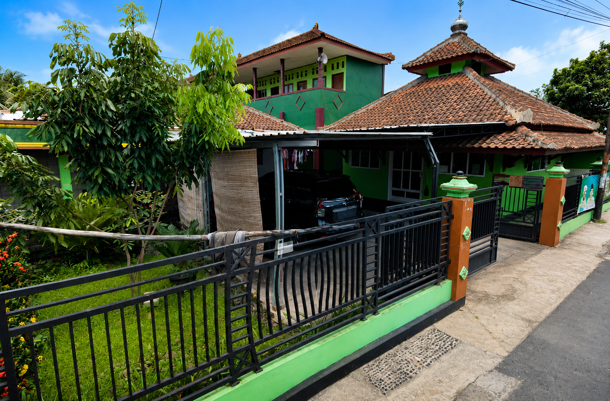

Mencetak generasi berilmu, berakhlak mulia, dan mandiri dengan pendidikan yang seimbang antara ilmu agama dan ilmu umum sesuai ajaran Ahlussunnah wal Jama'ah.
📢 Pendaftaran Santri Baru Tahun Ajaran 2026/2027 Telah Dibuka

Kami menyediakan kurikulum terstruktur untuk membentuk santri yang kompeten dalam ilmu agama dan berkarakter luhur
Pembelajaran bacaan dan pemahaman Al-Qur'an dengan kaidah yang benar
Pengajian kitab klasik Islam sesuai tradisi dan manhaj Nahdlatul Ulama
Membentuk kepribadian santri yang santun, jujur, dan bertanggung jawab
Pembiasaan ibadah berjamaah dan kegiatan keagamaan sehari-hari
Pembelajaran umum yang mendukung kemampuan akademik santri